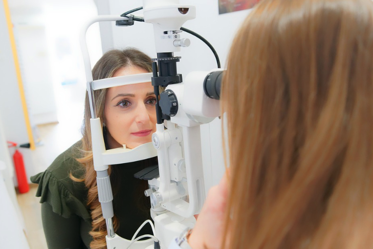
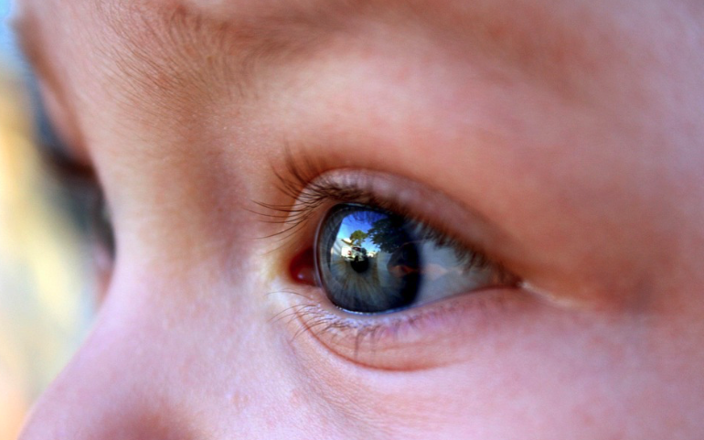
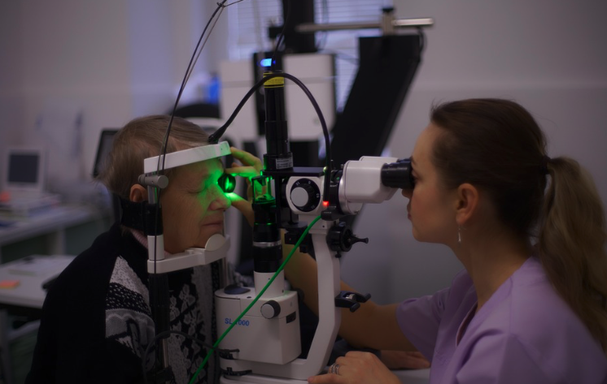
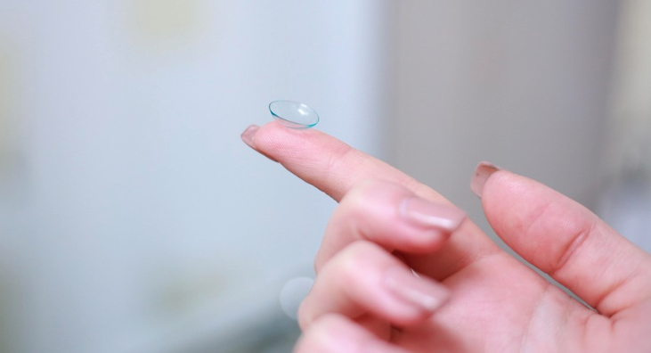

We provide comprehensive eye care for patients of all ages using modern diagnostic technology and personalized treatment plans.

The American Optometric Association recommends eye exams every one to two years depending on age and health.
Early detection of vision problems supports learning and development. School screenings do not replace a comprehensive eye exam.
We accept children beginning at age 6.


